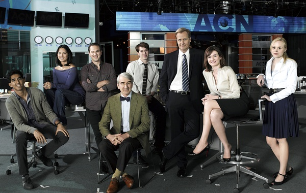

IT’S NOT, BUT IT CAN BE
《新闻编辑室 The NewsRoom》然看下去没有预期的有意思，但故事中人物的一些观点与态度，做事的方法还是挺有启发的。第一集开头里，一位女学生问几位讲座嘉宾为什么美国能称为世界上最伟大的国家。两位嘉宾回答了大多数人都能猜到的答案——自由，多元性与机遇。只有WILL的答案让人意外，关于这段精彩的对白，可以点此观看影片。
我们不凭“投票给谁”来区分人 WILL在谈话中对主持人之前逼问的政治立场，做了反驳：曾经我们不凭“投票给谁”来区分人。这句话也会让很多中国人中箭吧。不管是长期“5毛”与“愤青”之间的对骂，还是针对近在眼前的“羽毛球消极比赛事件”的评论，大家都只会针对他人所站的立场进行快速粗鲁的划分，然后开始漫骂，从不关心对方观点的逻辑，也不自我思考。 粉丝的对骂也是如此，不要认为这种漫骂只存在低端人群，很多的所谓知识分子也都在做着同样“暴徒”的行为，比如年初的“方韩大战”。我们的朋友考拉说的：自从她表达自己是个方粉后，不少关注她的人就把她拉黑了。网络虽然使得表达自由了不少，但让一个人变得习惯自我思考还是很难，你会发现人们都喜欢快速地区分阵营，然后开战，并不喜欢去了解对方的观点与逻辑。
IT’S NOT, BUT IT CAN BE 人变得越来越懒，更倾向于相信一个已有的具象结果，而不愿意自我寻找。比如这些年来的佛教热。为什么人们遇见信佛的人就觉得比没有信仰的要高级一点呢？为什么那么多宣称信佛的明星，却也干着很多恶俗的事呢？信仰关系底线，有没有信仰很重要，但当你内心需要一个信仰的时候，大部分的人希望快速地去选择一个结果，如某个存在的宗教。 我们都希望早日归属于一个最好的结果，而缺乏勇气和耐心去自我寻找。愤青会说中国有很多的问题，5毛会说美国也有很多的黑暗面啊。到底什么样的环境才是我们最理想的归属呢？什么才是最好的，在事情终结前都不确定。更重要的是，是否有好的规则与监督去促使一切不断变好，最应该寻找的是这个。
真正的“错”
第二集亮点不多，只是在最后有一个。Will的团队把一件重要的工作搞砸了，没有做好。出于担心，Will在节目中用自己的方式希望进行补救。在节目结束后制片Mac与Will发生争吵，当中Mac说：“是的，我们搞砸了一个大专题，但我们那是出了差错。你是出于恐惧，渴望陌生人的爱，而不是我们的节目。当个引领者，威尔，成为这节目的道德核心，做它的脊梁骨。” 大部分工作都无法避免出错，但这并不可怕。重要的是大家的目的是否一致，是否是希望努力把事情做好。别因为对出错的恐惧，而作出伤害团队的事情。那才是错的事情。
Will的道歉信

早在大众传播业出现伊始，新闻业的创始人——威廉·佩利（哥伦比亚广播公司董事长）和戴维·萨尔诺夫（誉为美国广播通讯业之父），来到华盛顿与国会达成协议。国会同意当时羽翼未丰的广播公司，无偿使用纳税人所有的电波频率。作为交换，广播公司要承担一项公共服务职能，那就是每晚的广播节目都要拿出一小时，用于向公众传播信息，这就是我们现在晚间新闻的前身。然而国会无法预料到，拥有巨大能力的电视业，不得不把观众出卖给广告商。我们违背了当初的诺言，这巨大的国家话语权本该无限地为公共利益服务，但国会忘了加以限制。 在任何情况下，公共信息传播都不得出现付费广告。他们忘了说，是纳税人无偿提供给你们的广播频率。你们可以在一天里其余的23个小时尽管赚钱，但是在晚上的这一个小时里 你们是为我们服务的。 …… …… 你们也许没想到，历史上最优秀美国新闻人如今就在这里，他们有着杰出的头脑和多年经验，还有报道新闻的坚定信念，但是如今这样的声音成了少数。在与大环境的抗争中他们一败涂地。如今我要离开这大环境， 重振旗鼓。 我们致力于从更广阔的背景下向你传递信息，因为我们可以随时获知，正在发生的哪怕最小的新闻。我们坚持事实为王，坚决反对讽刺、臆测、炒作、毫无意义的不正之风。我们不是餐厅的服务员，按照你的要求给你端上你想要的菜品。我们也不是只会向你分发实情的计算机，因为新闻只有在人性的背景下才有意义。我不会抑制自己的观点，我会尽我所能向你展示与我不同的观点。 我们有什么资格做决定呢？因为我们是媒体精英。 …… ……
我们之后看到《新闻编辑室》都基本坚持着两个原则：所有信息来源都要真实求证，播出时又需要有自己的观点，因为“新闻只有在人性的背景下才有意义”，平衡两者应该相当不容易。
暴徒
《新闻编辑室》第六集里，Will为求一个回答来证明自己的论点，对那位黑人老师步步紧逼，没有意识到已经对那位黑人老师造成了伤害。事后他才意识到：他有学生，有父母，有朋友，有同事 以及陌生人。我才是恶霸。 剧中那位黑人老师的反驳也很发人深思：
我是个活生生的人，你怎能单凭我的肤色或性取向来评价我？世上有很多人和我一样，千千万万的人为自由而献身，来诠释自己生命的意义。你凭什么替我决定，什么才是重要的？
没错。论及同性恋团体的平等权益时，桑托勒姆参议员的观点是错的。但我更不能接受，你专横地暗示：我需要你的保护。我并不仅仅是黑人，也不仅仅是同性恋，如果这不符合你对我狭隘的定义，我毫不在意，因为我也并不由你来定义。用你的脑子好好想想吧，我不需要你的援手。
价值观与自我修养
第五集，当印度IT男告诉大家：他们找的开罗自由记者失去联络，可能遇害时，会议室里的各位同事，连“会议结束”这样的废话一句也没说，就马上出去寻找一切可能的方法联络那位埃及人。 为什么他们工作看起来那么齐心和有效率，除了各自对新闻业的理想外。还得益于他们内心对社会的价值观是非常一致的，什么事情是最重要的他们很清楚。工作本身虽然很重要，但对某些价值观来说还并不是最重要的。 而重要的是：原本看似和工作本身无关的个人价值观，如果共事的人都能达到相对一致，倒真的有利于工作，更有效也让团队更团结，并能互相理解尊重。
这集的最后，当那位娱乐八卦记者问Will：“你看不惯我称自己是新闻工作者吗？难道只有那小拨”精英”，尽报导些没人关心的狗屁，才能称自己是新闻工作者吗？”时……Will愤怒的回答，倒也可以送给国内大部分媒体人自省。 “我有个同事，周四的时候头被玻璃门撞伤了，他的前额血流不止，但他并没有去就医，因为我另一个同事在开罗做报导时被打了。只有被打的同事看完医生，他才愿意去看医生。我的一个制片人跑去撞门，因为他觉得自己该对被打的同事负责。有个18岁的孩子甘愿冒生命危险，在地球另一端帮我们做新闻，而派他去的副制片人，也整整三天没合眼。有20多岁的小姑娘在关心威斯康辛州的教师，一个还需要用手指做减法的成年女性，耗着整晚去学经济学基础知识，而教她的那位经济学博士，本可在城里谋一份高薪的工作。 他们才是新闻工作者。”